- Was am Ende läuft: Du schreibst auf einer Chat-Seite ein Thema. Ein Agent in n8n prüft es gegen die Markenregeln, schreibt Texte für Instagram und LinkedIn, baut die Bilder und reicht den Beitrag zur Freigabe ein. In Telegram gibst du ihn frei oder lehnst ihn ab, erst danach wird er in Nextcloud abgelegt.
- Reihenfolge: Server und n8n, Supabase, Zugänge in n8n, Platzhalter in den Dateien ersetzen, Workflows importieren und Zugänge wählen, veröffentlichen, Testauftrag.
- Wichtig: Werte für Zugänge gehören nur in die n8n-Credentials, nie in eine Datei. Der Import in eine fremde Instanz ist bisher nicht nachgespielt; die Schritte beschreiben den erwarteten Weg. Die LICENSE erlaubt ausschließlich das Lesen zur Durchsicht und zum Lernen. Kopieren, Weitergeben, Verändern oder Betreiben ist nur nach vorheriger schriftlicher Absprache mit dem Rechteinhaber erlaubt; Anfragen über ein Issue im Repository (Kapitel 12).
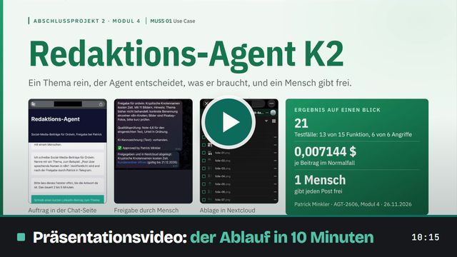
Präsentationsvideo: der Ablauf in 10 Minuten
Die Abschlusspräsentation vom 26.11.2026 zeigt den fertigen Agenten in einem Lauf: Auftrag in der Chat-Seite, Agent in n8n, Freigabe in Telegram und Ablage in Nextcloud, danach ein abgewehrter Angriff. Die Kapitelliste auf der Videoseite springt direkt zu jedem Teil.
Kapitel 1
Was am Ende läuft
1 Agent mit 6 Werkzeugen, dazu ein eigener Freigabe-Workflow und ein Fristen-Workflow.
Der Hauptworkflow nimmt den Auftrag über eine Chat-Seite mit Anmeldung an und prüft ihn am Eingang (Schwärzen, Angriffe, Themenbindung). Der Agent ruft dann seine Werkzeuge auf: Markenwissen abfragen, bei Bedarf das Thema recherchieren, Text schreiben, Qualität prüfen, Bilder gestalten und zur Freigabe einreichen. Danach prüft der Hauptworkflow den Beitrag am Ausgang und startet den Freigabe-Workflow, ohne auf ihn zu warten. Dieser schickt eine Vorschau mit 2 Knöpfen nach Telegram und legt den Beitrag erst nach der Freigabe in Nextcloud ab. Der Fristen-Workflow setzt Beiträge, die zu lange auf eine Freigabe warten, auf den Status freigabe_abgelaufen.

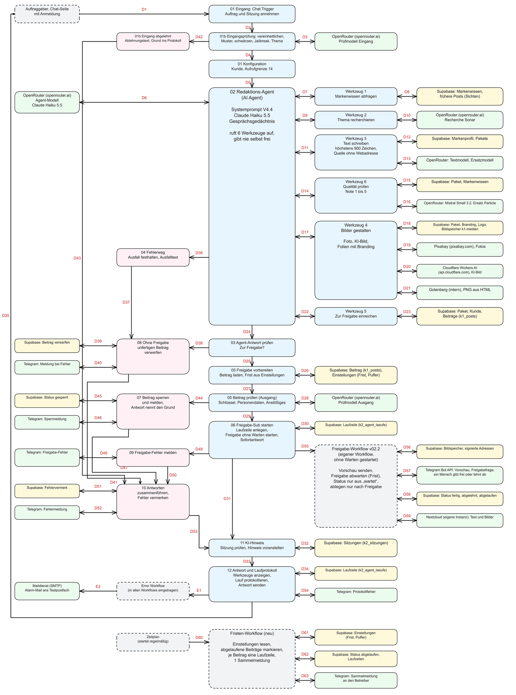
Kapitel 2
Zeit, Voraussetzungen, Kosten
Zeitbedarf
Rund 3 bis 4 Stunden, wenn alle Konten schon bestehen. Das ist eine Schätzung, nicht gemessen; der Import in eine fremde Instanz wurde bisher nicht nachgespielt.
Voraussetzungen
- Eine eigene n8n-Instanz (selbst gehostet oder n8n Cloud) mit Rechten zum Importieren und Veröffentlichen. Die Workflows laufen in der Ursprungsinstanz mit n8n 2.47.7 (Stand 25.11.2026). Ältere Versionen ohne Publish und Guardrails-Knoten funktionieren nicht.
- Die n8n-Instanz ist über HTTPS aus dem Internet erreichbar. Die Freigabe-Knöpfe in Telegram und das Formular für den Ablehnungsgrund rufen sie von außen auf; auf einem Rechner ohne öffentliche Adresse endet der Test bei der Freigabe.
- Ein Gotenberg-Dienst, den n8n erreicht, auf Port 3000. Selbst gehostet am einfachsten als Container im selben Netz wie n8n. Bei n8n Cloud muss dein Gotenberg-Server aus dem Internet auf Port 3000 erreichbar sein; Gotenberg hat keine eigene Anmeldung, sichere den Zugriff ab.
- Ein Texteditor mit Suchen und Ersetzen über alle Treffer (für die Platzhalter in den JSON-Dateien).
- Telegram auf Handy oder PC für die Freigabe.
- Der Ablage-Workflow
sub-nextcloud-ablage.jsonaus dem Repository content-maschine-k1, er ist nicht in diesem Repository. - Lizenz: Die LICENSE erlaubt ausschließlich das Lesen zur Durchsicht und zum Lernen. Kopieren, Weitergeben, Verändern oder Betreiben ist nur nach vorheriger schriftlicher Absprache mit dem Rechteinhaber erlaubt; Anfragen über ein Issue im Repository.
Kosten
| Posten | Betrag | Herkunft |
|---|---|---|
| Normaler Lauf mit Bildern, Qualitätsprüfung und Einreichen | 0,007144 $ | aus den Tokens eines Laufs zum Listenpreis gerechnet (Agent Claude Haiku 5.5 und Prüfmodell über OpenRouter) |
| Lauf mit Recherche | 0,015963 $ | gemessen an 1 Lauf, davon Recherche 0,005560 $ |
| Hochrechnung bei 300 Anfragen am Tag | 2,14 $ am Tag, 47,15 $ im Monat | nicht gemessen; 300 Anfragen sind eine Annahme, Monat mit 22 Arbeitstagen, ohne Recherche |
| Kleiner Server (VPS) | 8,79 $ im Monat | Hostinger KVM 2 bei 24 Monaten Laufzeit (210,96 $ für 24 Monate), Stand 25.11.2026; Verlängerung danach 14,99 $ im Monat |
| Supabase, Pixabay, Telegram | 0 $ | kostenlose Stufen reichen für den Testbetrieb |
Text-Werkzeug, Eingangs- und Ausgangsprüfung laufen über kostenlose Modelle. Für den kostenpflichtigen OpenRouter-Zugang lädst du Guthaben; ein paar Dollar reichen für viele Testläufe. Server, Datenbank und Ablage sind in den Laufkosten nicht enthalten.

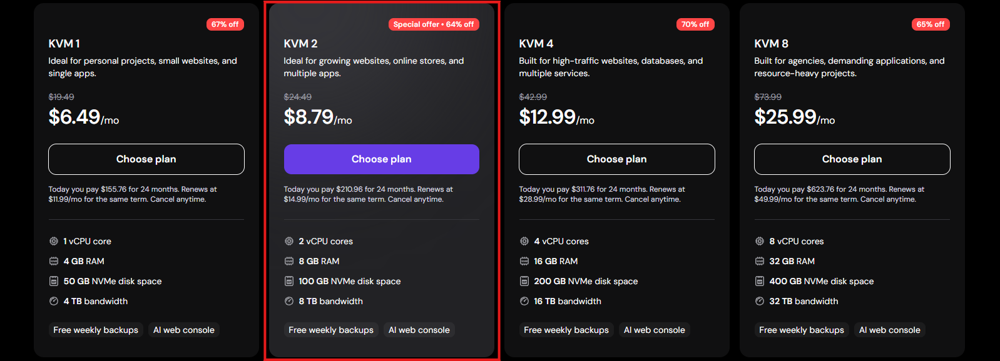
Kapitel 3
Konten-Checkliste
Lege diese Konten an, bevor du anfängst. Die Namen aller Werte stehen in .env.example (nur Namen, keine Werte).
| Dienst | Wozu | Was du holst | Anmeldeseite |
|---|---|---|---|
| n8n | alle Workflows, Chat-Seite | eigene Instanz | selbst hosten oder n8n Cloud |
| Supabase | Datenbank und Bildspeicher | Projekt-Adresse, Service-Key | supabase.com/dashboard |
| OpenRouter | alle Sprachmodelle | 2 API-Keys (kostenpflichtig, kostenlos), Guthaben | openrouter.ai/settings/keys |
| Telegram | Vorschau, Freigabe, Meldungen | Bot-Token, Chat-ID, Nutzer-ID | t.me/BotFather |
| Nextcloud | Ablage nach der Freigabe | Adresse der Nextcloud, Benutzername, App-Passwort | nextcloud.com oder eigene Instanz |
| Pixabay | Fotos zu Schlagwörtern | API-Key | pixabay.com/api/docs |
| Cloudflare Workers AI | KI-Bild, wenn kein Foto passt | API-Token, Account-ID | dash.cloudflare.com/profile/api-tokens |
| Gotenberg | Folien als PNG rendern | Docker-Image, kein Konto | hub.docker.com/r/gotenberg/gotenberg |
- n8n-Instanz erreichbar, du bist angemeldet
- Supabase-Projekt angelegt
- OpenRouter: 2 API-Keys erzeugt, Guthaben geladen
- Telegram-Bot angelegt, Token notiert
- Nextcloud-Zugang bereit
- Pixabay-Key und Cloudflare-Token mit Account-ID bereit
- Gotenberg-Container läuft
Kapitel 4
Schritt 1: Server und n8n
Ziel: n8n läuft und erreicht einen Gotenberg-Dienst.
- n8n bereitstellen: entweder n8n Cloud buchen oder n8n auf einem eigenen Server nach der Hosting-Anleitung von n8n installieren.
- Gotenberg als Container im selben Netz wie n8n starten, Port 3000. Das Image heißt
gotenberg/gotenberg. - Notiere 2 Adressen für später: den Hostnamen deiner n8n-Instanz ohne
https://und ohne Schrägstrich am Ende, zum Beispieln8n.example.org, und den Hostnamen von Gotenberg ohne Protokoll und ohne Port, zum Beispielgotenberg. Den Port 3000 hängt der Workflow selbst an.
Du kannst dich in n8n anmelden und siehst die leere Workflow-Liste. Gotenberg läuft als Container und ist aus dem n8n-Netz unter Port 3000 erreichbar.
- Gotenberg ist nur von außen erreichbar, nicht aus dem n8n-Netz: das Bild-Werkzeug kann die Folien dann nicht rendern.
- Port 3999 statt 3000: Diese Einstellung ist im Workflow ein Testschalter für einen absichtlichen Ausfall.
Kapitel 5
Schritt 2: Supabase
4 SQL-Dateien, 1 Bucket, 5 Einstellungszeilen, 1 Testkunde.
2a SQL-Dateien ausführen
Ziel: Alle Tabellen und Views liegen im Schema public.
- Im Supabase-Projekt links den SQL Editor öffnen, oben New.
- Den Inhalt der ersten Datei einfügen und mit Run ausführen (Bild 3, rot markiert).
- Die übrigen Dateien genau in dieser Reihenfolge, je in einer neuen Abfrage:
| Nr | Datei | Legt an |
|---|---|---|
| 1 | sql/p1_k1_tabellen_v01.sql | k1_kunden, k1_posts, k1_einstellungen, k1_laufprotokoll |
| 2 | sql/p2_k2_views_v01.sql | Spalte erzeugt_von in k1_posts, dann die Views k2_v_markenwissen und k2_v_fruehere_posts |
| 3 | sql/p2_k2_pakete_v01.sql | Paket-Speicher k2_pakete |
| 4 | sql/p2_k2_sitzungen_laeufe_tests_v01.sql | k2_sitzungen, k2_agent_laeufe, k2_agent_testfaelle, k2_agent_testergebnisse, View k2_v_kosten_tag |

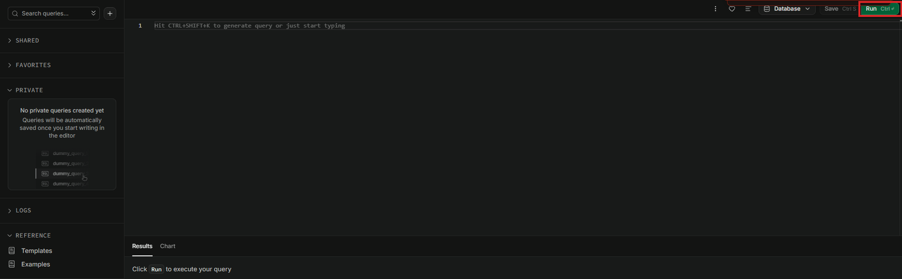
Unter Database, Tables mit dem Suchfilter k2_ stehen 5 Tabellen und 3 Views (Bild 4), mit dem Filter k1_ die 4 Tabellen aus Datei 1.

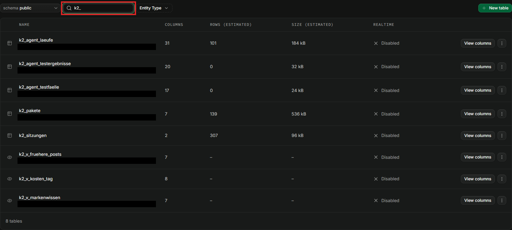
k2_. Die Zeilenzahlen stammen aus der eigenen Instanz; bei dir stehen dort Nullen. Beschreibungstexte geschwärzt.- Falsche Reihenfolge: Datei 2 ändert
k1_posts, Datei 4 verweist mit einem Fremdschlüssel aufk1_posts. Fehlt die Tabelle, bricht das Skript ab. Dann Datei 1 nachholen und die abgebrochene Datei erneut ausführen.
2b Bucket für die Bilder
Ziel: Ein Storage-Bucket mit dem Namen k1-medien.
- Links Storage, Reiter Buckets, Knopf New bucket.
- Name genau
k1-medien; der Name steht fest in den Workflows.

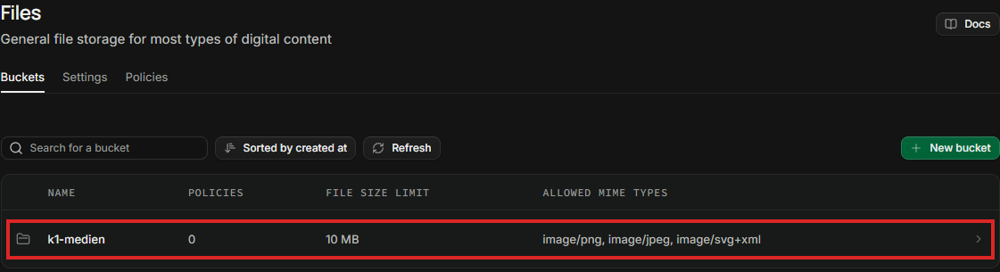
k1-medien in der eigenen Instanz, mit 10 MB Dateigrenze und den Bildtypen PNG, JPEG und SVG.Der Bucket steht in der Liste. Nach dem ersten Testlauf liegen dort die Folien des Beitrags.
2c Einstellungen und Testkunde
Ziel: Die Workflows finden ihre Einstellungen und einen Kunden mit Markenprofil.
- Im SQL Editor die Einstellungszeilen anlegen. Die Werte in spitzen Klammern ersetzt du durch deine eigenen. Chat-ID und Nutzer-ID kennst du erst nach Schritt 3c, die Account-ID von Cloudflare nach Schritt 3d; führe diesen Block deshalb erst danach aus, oder trage die 3 Werte mit einem
updatenach. - Einen Testkunden mit erfundenen Daten anlegen. Sein Kürzel trägst du in Schritt 5 im Knoten
Konfigurationein.
Zum Kopieren die Webfassung nehmen; im PDF bricht der Block um.
insert into public.k1_einstellungen (setting_key, setting_value, description) values
('telegram_chat_id', '<deine Chat-ID>', 'Ziel für Vorschau und Meldungen'),
('telegram_freigabe_nutzer_id', '<deine Telegram-Nutzer-ID>', 'nur diese Person darf freigeben'),
('cloudflare_account_id', '<deine Account-ID>', 'Workers AI für das KI-Bild'),
('freigabe_frist_minuten', '1440', 'ganze Zahl von 1 bis 1440'),
('freigabe_puffer_minuten', '10', 'ganze Zahl von 0 bis 120');
insert into public.k1_kunden (kuerzel, name, ton, zielgruppe, no_gos, cta_text, hashtags_fest)
values ('test-p2', 'Testkunde', 'sachlich, freundlich', 'kleine Betriebe',
array['keine Preisversprechen'], 'Schreib uns eine Nachricht.', array['#Beispiel']);Die Spaltennamen stammen aus sql/p1_k1_tabellen_v01.sql. Farben, Schriften, Logo und branding_pack sind optional; das Bild-Werkzeug nutzt sie für das Layout der Folien.
Im Table Editor zeigt k1_einstellungen 5 Zeilen und k1_kunden deinen Testkunden mit aktiv = true.
freigabe_frist_minutenist keine ganze Zahl von 1 bis 1440, oderfreigabe_puffer_minutennicht von 0 bis 120: Hauptworkflow und Fristen-Workflow brechen mit dieser Meldung ab; den Puffer prüft nur der Fristen-Workflow.- Chat-ID oder Nutzer-ID fehlt: der Hauptworkflow meldet „Freigabe: Der Telegram-Zugang fehlt in den Einstellungen.“
Kapitel 6
Schritt 3: Zugänge in n8n
8 Credentials: 7 für dieses Repository, 1 für den Ablage-Workflow. Jeder Zugang wird in n8n über Create credential angelegt; beim Import wählst du ihn in jedem Knoten aus.
So legst du jeden Zugang an: In n8n auf der Übersicht oben rechts Create credential, im Dialog den Typ suchen (Bild 6), Continue, die Werte eintragen, einen sprechenden Namen vergeben und speichern. Die Bilder dieses Kapitels zeigen die Masken mit verdeckten Werten; Adressen aus der eigenen Instanz sind geschwärzt.

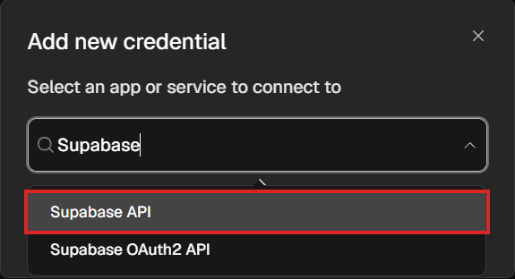
| Zugang | Typ in n8n | Felder | Gebraucht von |
|---|---|---|---|
| Supabase | Supabase API | Host = Projekt-Adresse, Secret Key = Service-Key | Hauptworkflow, Freigabe, Fristen, Werkzeuge 1, 3, 4, 5, 6 |
| OpenRouter, kostenpflichtig | OpenAI | API Key, Base URL https://openrouter.ai/api/v1 | Agent, Recherche (Werkzeug 2), Prüfmodell in Werkzeug 6 |
| OpenRouter, kostenlos | OpenAI | API Key, Base URL https://openrouter.ai/api/v1 | Text-Werkzeug, Eingangs- und Ausgangsprüfung, Ersatzmodell der Qualitätsprüfung, Reserve-Modell des Agenten; im Export endet der Name dieses Zugangs auf CHAT |
| Telegram | Telegram API | Access Token = Bot-Token | Hauptworkflow, Freigabe, Fristen |
| Pixabay | Query Auth | Name key, Value = API-Key | Werkzeug 4 |
| Cloudflare Workers AI | Header Auth | Name Authorization, Value Bearer <Token> | Werkzeug 4 |
| Chat-Seite | Basic Auth | User, Password (frei gewählt) | Chat-Eingang im Hauptworkflow |
| Nextcloud | NextCloud API | Web-DAV-Adresse, Benutzername, App-Passwort | nur der Ablage-Workflow aus content-maschine-k1 (7 Nextcloud-Knoten und der Knoten Freigabelink erzeugen) |
Der Nextcloud-Zugang (Typ NextCloud API) wird nur im Ablage-Workflow aus content-maschine-k1 gebraucht, siehe 3f.
3a Supabase
- Typ Supabase API, als Host die Projekt-Adresse (
https://<projekt>.supabase.co), als Secret Key den Service-Key aus den Projekteinstellungen von Supabase. - Speichern; n8n testet die Verbindung selbst.

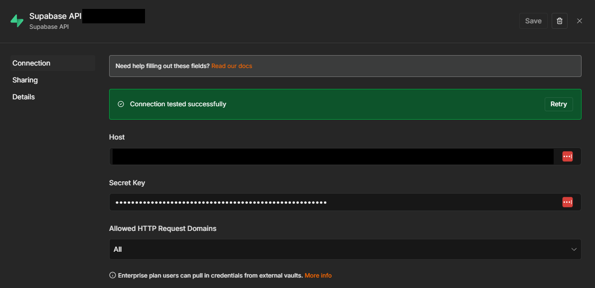
3b OpenRouter (2 Zugänge)
- Auf openrouter.ai/settings/keys 2 Keys erzeugen; für den kostenpflichtigen unter Credits Guthaben laden.
- In n8n je Key einen Zugang vom Typ OpenAI anlegen. API Key eintragen und die Base URL auf
https://openrouter.ai/api/v1ändern (Bild 8). - Die Namen so wählen, dass du kostenpflichtig und kostenlos unterscheiden kannst.

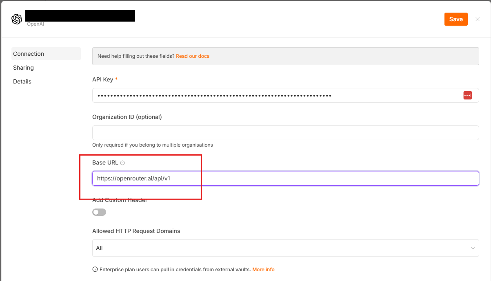
3c Telegram
- In Telegram den BotFather öffnen,
/newbotsenden (Bild 9), Anzeigename und Nutzername wählen (der Nutzername muss aufbotenden). Der BotFather antwortet mit dem Token. - In n8n Typ Telegram API, Token als Access Token eintragen (Bild 10), speichern.
- Dem Bot 1 Nachricht schreiben. Dann im Browser
https://api.telegram.org/bot<Token>/getUpdatesöffnen:message.chat.idist die Chat-ID,message.from.iddeine Nutzer-ID; im Einzelchat mit dem Bot sind die 2 Zahlen gleich. Du trägst sie ink1_einstellungenein (Schritt 2c). Die Adresse enthält den Token, also nicht teilen und nicht fotografieren.
Hinweis: Der Weg über getUpdates folgt der Telegram Bot API und ist nicht an dieser Instanz nachgespielt. Liefert die Adresse eine leere Liste, dem Bot erneut schreiben und die Seite neu laden.

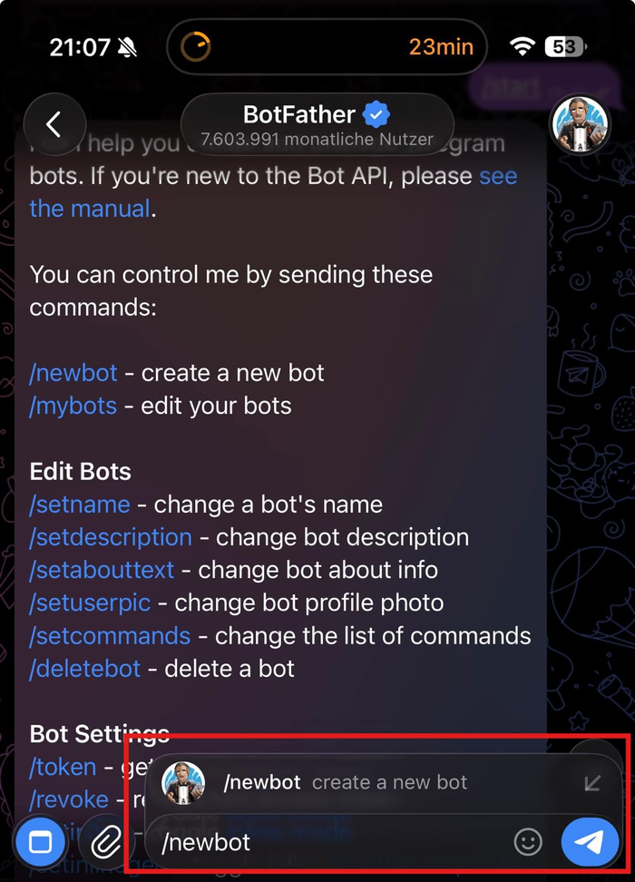
/newbot im Chat mit dem BotFather.
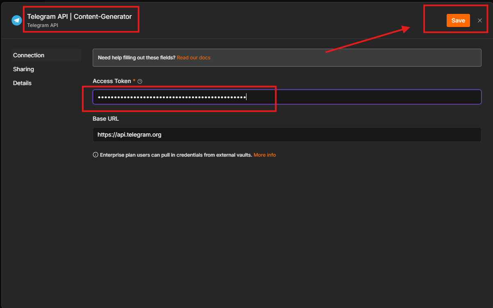
3d Pixabay und Cloudflare Workers AI
- Pixabay: Den API-Key zeigt die API-Dokumentation nach der Anmeldung. In n8n Typ Query Auth, Name
key, Value = Key (Bild 11). Unter Allowed HTTP Request Domains kannst dupixabay.comeintragen. - Cloudflare: Unter API-Tokens einen Token mit der Berechtigung Workers AI, Bearbeiten erstellen (Bild 12). Die Account-ID steht im Cloudflare-Dashboard; sie kommt in
k1_einstellungen. - In n8n Typ Header Auth, Name
Authorization, ValueBearer <Token>(Bild 13).

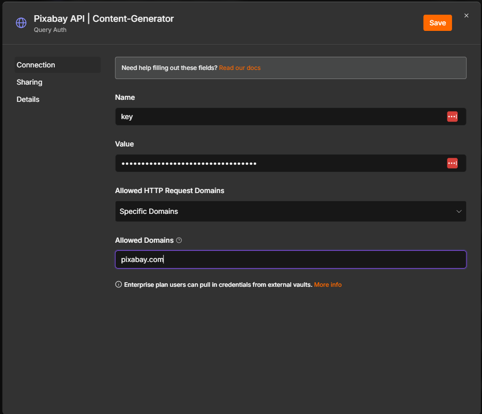
key.
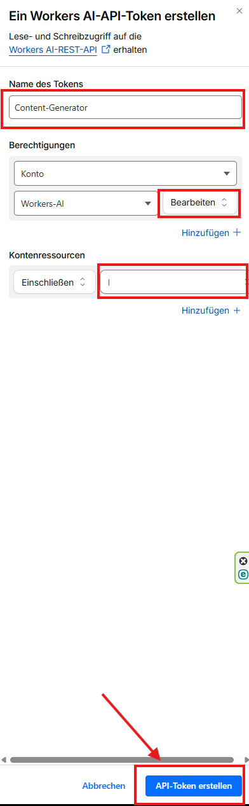

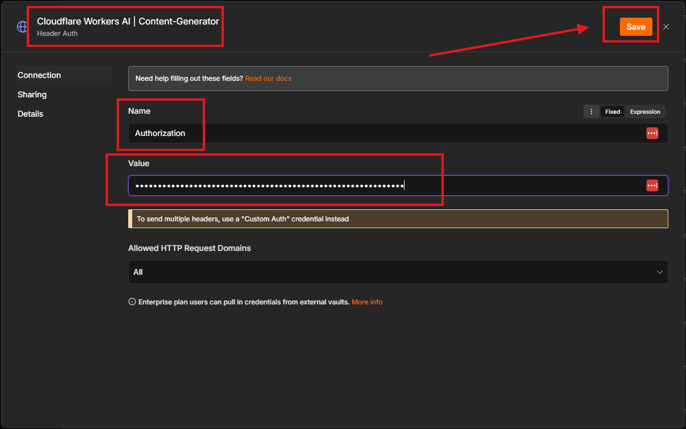
Authorization.3e Anmeldung der Chat-Seite
- Typ Basic Auth, Benutzername und Passwort frei wählen. Mit diesen Daten meldest du dich später auf der Chat-Seite an.
- Allowed HTTP Request Domains auf None setzen; so kann kein HTTP-Knoten diesen Zugang nutzen (Bild 14).

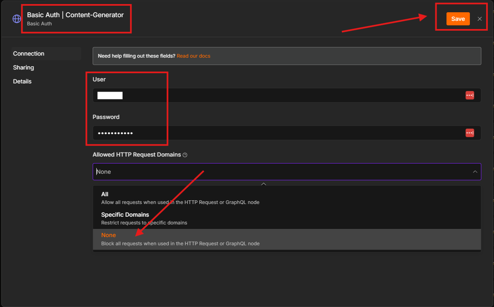
3f Nextcloud (für den Ablage-Workflow)
- In deiner Nextcloud unter den persönlichen Einstellungen, Sicherheit, ein App-Passwort für n8n erzeugen.
- In n8n Typ NextCloud API: die Web-DAV-Adresse deiner Nextcloud, deinen Benutzernamen und das App-Passwort eintragen, speichern.
- Diesen Zugang wählst du in Schritt 5 beim Import in den 7 Nextcloud-Knoten und im Knoten
Freigabelink erzeugen [HTTP Request]des Ablage-Workflows aus.
Die Feldnamen der Maske sind hier ohne Bild beschrieben; lies sie an deiner eigenen Maske ab.
Unter Credentials stehen 8 neue Zugänge: 7 für dieses Repository und 1 für Nextcloud. Supabase, Telegram und OpenRouter zeigen beim Öffnen „Connection tested successfully“.
- OpenRouter-Zugang mit der Standard-Base-URL von OpenAI: die Modelle werden nicht gefunden.
- Bei Header Auth fehlt
Bearervor dem Token: Cloudflare lehnt den Aufruf ab.
Kapitel 7
Schritt 4: Platzhalter in den Dateien ersetzen
Vor dem ersten Import: Adressen und Kennungen in allen Dateien, damit kein Workflow mit einem Platzhalter in n8n landet.
Ziel: In allen Dateien stehen deine Adressen, bevor du die erste Datei importierst.
- Die 9 Dateien direkt im Ordner workflows/ (ohne die Unterordner) und den Ablage-Workflow sub-nextcloud-ablage.json herunterladen (auf der GitHub-Seite jeder Datei der Knopf zum Herunterladen der Rohdatei, oder das Repository als ZIP).
- Im Texteditor mit Suchen und Ersetzen (alle Treffer, über alle Dateien) die Platzhalter aus der Tabelle ersetzen. Ausnahmen:
WEBHOOK_ID(je Knoten einzeln, siehe Tabelle) undCREDENTIAL_ID(bleibt stehen). - Die Platzhalter der Workflow-IDs bleiben noch stehen. Die neuen IDs kennst du erst nach dem Import; du trägst sie in Schritt 5 Datei für Datei ein.
| Platzhalter | Wo | Ersetzen durch |
|---|---|---|
SUPABASE_URL | 30 Stellen, im Export immer als https://SUPABASE_URL: 12 Hauptworkflow, 7 Freigabe, 5 Werkzeug 4, 4 Fristen, je 1 in Werkzeug 3 und 5 | Projekt-Adresse aus Schritt 3a (https://<projekt>.supabase.co) ohne https:// davor, weil es im Export schon steht, und ohne Schrägstrich am Ende, zum Beispiel abcdefgh.supabase.co (nicht die Adresse der Postgres-Verbindung) |
DEINE-N8N-INSTANZ | ohne https:// suchen, alle Treffer in allen Dateien: 1 Stelle mit Funktion im Chat-Eingang, Feld der erlaubten Herkunft (allowedOrigins, dort steht https:// schon davor), 1 Stelle in der Sperrliste im Code-Knoten „Agent-Antwort prüfen“ des Hauptworkflows (/DEINE-N8N-INSTANZ/i), dazu 11 Notizen in 9 Dateien ohne Funktion | Hostname deiner n8n-Instanz ohne https://, ohne Schrägstrich am Ende und ohne Pfad, zum Beispiel n8n.example.org. Das trifft Chat-Eingang, Sperrliste und Notizen in 1 Durchgang. Der Punkt im Hostnamen passt in der Sperrliste auf jedes Zeichen, die Sperre greift also eher zu oft als zu selten |
GOTENBERG_HOST | Werkzeug 4, in der Adresse http://GOTENBERG_HOST:3000/… | nur der Hostname deines Gotenberg-Dienstes, ohne http:// und ohne Port (der Workflow hängt :3000 an), zum Beispiel gotenberg |
ERROR_WORKFLOW_ID | Einstellungen jedes der 9 Workflows dieses Repositorys, je 1 Stelle ("errorWorkflow"); im Ablage-Workflow steht dort eine feste Kennung, siehe unten | ID eines eigenen Fehler-Workflows, oder in jeder Datei die Zeile "errorWorkflow": "ERROR_WORKFLOW_ID" entfernen |
NEXTCLOUD_URL | Ablage-Workflow sub-nextcloud-ablage.json, 3 Stellen, davon 1 mit Funktion im Aufruf für den Freigabelink (https://NEXTCLOUD_URL/ocs/…) | Adresse deiner Nextcloud ohne https://, einschließlich eines vorhandenen Installationspfads und ohne abschließenden Schrägstrich, zum Beispiel cloud.example.org oder cloud.example.org/nextcloud |
WEBHOOK_ID | Feld webhookId: 7 Knoten im Hauptworkflow, 11 im Freigabe-Workflow, 1 im Fristen-Workflow („Frist melden [Telegram]“) | Feld in diesen Knoten entfernen oder je Knoten eine eigene, neue UUID eintragen, nie überall denselben Wert |
CREDENTIAL_ID | jeder Knoten mit Zugang | nicht in der Datei ersetzen; beim Import in Schritt 5 je Knoten den eigenen Zugang auswählen, der angezeigte Name sagt, welcher gemeint ist |
Wer keinen eigenen Fehler-Workflow hat, entfernt die Zeile mit errorWorkflow. Achte dabei auf das Komma davor oder danach, damit die Datei gültiges JSON bleibt. Wie n8n mit einer unbekannten Fehler-Workflow-ID umgeht, ist nicht geprüft; lass den Platzhalter deshalb nicht stehen. Im Ablage-Workflow steht an dieser Stelle kein Platzhalter, sondern eine feste Kennung der Ursprungsinstanz. Suche dort nach errorWorkflow und trage deine eigene ID ein oder entferne die Zeile.
Die Suche nach SUPABASE_URL, DEINE-N8N-INSTANZ, GOTENBERG_HOST, ERROR_WORKFLOW_ID, NEXTCLOUD_URL und WEBHOOK_ID findet in den 10 Dateien nichts mehr. Die Suche nach https://https:// findet nichts. Die Suche nach /https: findet nichts. Die Suche nach //i, (mit dem Komma dahinter) findet nichts. Die Suche nach errorWorkflow zeigt in allen 10 Dateien nur noch deine eigene ID oder keinen Treffer.
GOTENBERG_HOSTsamt Port ersetzt: der Port steht dann doppelt in der Adresse (:3000:3000), und es entstehen keine Folienbilder.- Beim Entfernen einer Zeile ein Komma zu viel oder zu wenig: die Datei ist kein gültiges JSON mehr und lässt sich nicht importieren.
SUPABASE_URLoderDEINE-N8N-INSTANZsamthttps://eingesetzt: in der Datei steht dannhttps://https://…, die Aufrufe an Supabase scheitern, die Chat-Seite lädt nicht, und in der Sperrliste steht/https://…/i: der Code-Knoten „Agent-Antwort prüfen“ bricht dann bei jedem Lauf ab. Dasselbe gilt, wennDEINE-N8N-INSTANZmit Schrägstrich am Ende oder mit Pfad ersetzt wird.
Kapitel 8
Schritt 5: Workflows importieren und Zugänge wählen
Die Reihenfolge ist fest, weil die späteren Workflows die früheren per ID aufrufen.
Ziel: Alle 10 Workflows sind importiert, jeder Knoten hat seinen Zugang, und jeder Platzhalter einer Workflow-ID steht auf der neuen ID.
- Die 6 Werkzeuge einzeln importieren: in n8n einen neuen Workflow öffnen, Menü oben rechts, Import from File, Datei wählen, in jedem Knoten mit Warnsymbol den eigenen Zugang auswählen, speichern und veröffentlichen.
- Nach jedem Import die neue ID aus der Adressleiste notieren (
/workflow/<ID>). - Den Ablage-Workflow aus content-maschine-k1 importieren (
NEXTCLOUD_URLhast du in Schritt 4 ersetzt), in den 7 Nextcloud-Knoten und im KnotenFreigabelink erzeugen [HTTP Request]deinen Nextcloud-Zugang aus 3f auswählen, speichern, veröffentlichen, ID notieren. - In
sub-freigabe-abwarten-und-ablegen.jsonden PlatzhalterWORKFLOW_ID_NEXTCLOUD_ABLAGEdurch diese ID ersetzen, dann importieren, Zugänge wählen, speichern, veröffentlichen, ID notieren. freigabe-fristen.jsonimportieren, Zugänge wählen und speichern; veröffentlicht wird er erst in Schritt 6.- In
redaktions-agent.jsonim Texteditor mit Suchen und Ersetzen (alle Treffer) die Platzhalter aus der Tabelle durch die neuen IDs ersetzen, dann als Letztes importieren, Zugänge wählen und speichern.
| Nr | Datei | Rolle | Platzhalter für seine ID |
|---|---|---|---|
| 1 | sub-markenwissen-abfragen.json | Werkzeug 1 | WORKFLOW_ID_SUB_MARKENWISSEN |
| 2 | sub-thema-recherchieren.json | Werkzeug 2 | WORKFLOW_ID_SUB_RECHERCHE |
| 3 | sub-text-schreiben.json | Werkzeug 3 | WORKFLOW_ID_SUB_TEXT |
| 4 | sub-bilder-gestalten.json | Werkzeug 4 | WORKFLOW_ID_SUB_BILDER |
| 5 | sub-zur-freigabe-einreichen.json | Werkzeug 5 | WORKFLOW_ID_SUB_EINREICHEN |
| 6 | sub-qualitaet-pruefen.json | Werkzeug 6 | WORKFLOW_ID_SUB_QUALITAET |
| 7 | sub-nextcloud-ablage.json (anderes Repository) | Ablage in Nextcloud | WORKFLOW_ID_NEXTCLOUD_ABLAGE |
| 8 | sub-freigabe-abwarten-und-ablegen.json | Freigabe-Workflow | WORKFLOW_ID_SUB_FREIGABE |
| 9 | freigabe-fristen.json | Fristen-Workflow | keiner (steht nur im eigenen Feld id) |
| 10 | redaktions-agent.json | Hauptworkflow | keiner; WORKFLOW_ID_REDAKTIONS_AGENT und WORKFLOW_ID_PROJEKT_1 stehen nur im Feld id und in der Sperrliste und müssen nicht ersetzt werden |
Die Platzhalter TAG_ID_…, FOLDER_ID_PROJEKTORDNER und WORKFLOW_ID_TEST_… brauchst du nicht. Die Dateien in den Unterordnern von workflows/ und in archiv/ sind nicht zum Import gedacht. Wer nicht über das Menü importiert, entfernt vorher das Feld id der obersten Ebene (in den 9 Dateien dieses Repositorys weit hinten, im Ablage-Workflow ganz vorn), damit n8n eine neue ID vergibt.
Im Hauptworkflow anpassen
- Den Knoten
Konfiguration [Edit Fields]öffnen und das Feldkunde_kuerzelauf das Kürzel deines Testkunden setzen (im Export stehtordwin). - Im Knoten
Chat-Eingang [Chat Trigger]den Begrüßungstext und den Untertitel auf deine Marke und deine freigebende Person ändern; im Export stehen dort die Angaben der Ursprungsinstanz. Derselbe Vorname steht in den Antworttexten der KnotenMeldung fehlgeschlagen [Edit Fields]undFreigabe-Meldung gescheitert [Edit Fields]. - Im Code-Knoten „Agent-Antwort prüfen“ nachsehen, dass in der Sperrliste dein Hostname steht (aus Schritt 4), zum Beispiel
/n8n.example.org/i. - Je Knoten mit Warnsymbol den eigenen Zugang wählen. Jeder Rahmen im Hauptworkflow trägt im Titel eine Zeile „Setup:“, die nennt, welcher Zugang dort gebraucht wird; in den Werkzeugen steht eine Notiz Setup-Checkliste. Nennt eine Notiz eine andere Reihenfolge beim Veröffentlichen, gilt für die Neueinrichtung die Reihenfolge dieser Anleitung.
Die Workflow-Liste zeigt 10 neue Workflows, und kein Knoten zeigt mehr ein Warnsymbol für fehlende Zugänge. In redaktions-agent.json findet die Suche nach WORKFLOW_ID_SUB_ keinen Treffer mehr.
- Hauptworkflow zu früh importiert: seine Werkzeug-Knoten zeigen auf Platzhalter statt auf echte Workflows. Platzhalter in der Datei ersetzen und neu importieren, oder je Werkzeug-Knoten den Workflow im Editor neu auswählen.
- Überall dieselbe
webhookId: mehrere Telegram-Knoten teilen sich dann einen Webhook. - Begrüßung und Untertitel nicht angepasst: die Chat-Seite nennt Marke und Person der Ursprungsinstanz.
Kapitel 9
Schritt 6: Veröffentlichen
Ziel: Werkzeuge, Ablage-Workflow, Freigabe-Workflow und Hauptworkflow sind veröffentlicht, der Fristen-Workflow läuft alle 15 Minuten.
- Die 6 Werkzeuge, den Ablage-Workflow und den Freigabe-Workflow öffnen und oben rechts Publish wählen, falls noch nicht geschehen.
- Den Hauptworkflow veröffentlichen.
- Den Fristen-Workflow veröffentlichen (Publish); der Zeitplan startet ihn dann alle 15 Minuten. Er liest Frist und Puffer aus
k1_einstellungenund setzt wartende Beiträge nach Frist plus Puffer auffreigabe_abgelaufen, mit 1 Sammelmeldung in Telegram.

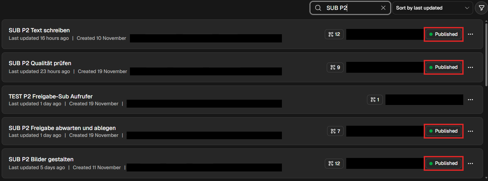
Alle 10 Workflows tragen Published: 6 Werkzeuge, Ablage, Freigabe, Hauptworkflow und Fristen-Workflow. Unter Executions erscheint nach spätestens 15 Minuten ein Lauf des Fristen-Workflows.
- Ein Werkzeug nicht veröffentlicht oder seine ID nicht eingetragen: der Aufruf aus dem Hauptworkflow scheitert. Liste und Platzhalter aus Kapitel 8 prüfen.
Kapitel 10
Schritt 7: Testauftrag und Freigabe in Telegram
Ziel: Ein Beitrag läuft von der Chat-Seite bis zur Ablage in Nextcloud.
- Im Hauptworkflow den Chat-Eingang öffnen; dort steht nach dem Veröffentlichen die Adresse der Chat-Seite.
- Die Chat-Seite im Browser öffnen und mit dem Basic-Auth-Zugang anmelden.
- Ein Thema schicken, zum Beispiel „Post über sprechende Namen in n8n“.
- Die Seite offen und im Vordergrund lassen, bis die Antwort da ist. Das dauert 2 bis 5 Minuten. Die Antwort endet mit der Zeile „Werkzeuge genutzt“.
- In Telegram kommt die Vorschau mit 2 Knöpfen. Freigeben legt den Beitrag mit Bildern in Nextcloud ab; Ablehnen fragt über ein Formular nach dem Grund.
In k1_posts steht der Beitrag erst mit Status wartet_auf_freigabe, nach der Freigabe mit fertig. In Nextcloud liegen Text und Bilder, in k2_agent_laeufe steht 1 Zeile für den Lauf, und der Bucket k1-medien enthält die Folien. Nach der Freigabe meldet Telegram „Freigegeben und in Nextcloud abgelegt“ mit dem Link „Kundenordner öffnen“ und dem Ablaufdatum; der Link öffnet den Ordner des Beitrags.
- Statt der Bestätigung kommt in Telegram „Freigegeben und abgelegt, aber ohne Freigabelink“ mit dem gemeldeten Fehlergrund:
NEXTCLOUD_URList nicht oder falsch ersetzt (der Platzhalter wirkt nur in diesem Aufruf), oder im KnotenFreigabelink erzeugen [HTTP Request]des Ablage-Workflows ist der Nextcloud-Zugang nicht gewählt. Die Ablage selbst ist trotzdem erledigt. - Chat-Seite geschlossen, Handy gesperrt oder App gewechselt: der letzte Knoten wartet, bis die Seite die Antwort abholt, und die Ausführung bleibt in n8n auf „Waiting“. Einreichung und Freigabe laufen trotzdem, weil der Freigabe-Workflow eigenständig läuft.
- Lauf im Editor statt über die Chat-Seite: dieselbe „Waiting“-Ausführung, weil niemand die Antwort abholt.
- Eine unpassende Anfrage (kein Thema für einen Beitrag) wird am Eingang mit einem festen Satz abgelehnt; das ist gewollt.
Kapitel 11
Fehlerbehebung
| Fehlerbild | Ursache | Abhilfe |
|---|---|---|
| Chat-Seite lädt nicht | erlaubte Herkunft im Chat-Eingang steht noch auf dem Platzhalter oder trägt https:// doppelt | eigene n8n-Adresse samt https:// und ohne Schrägstrich am Ende in allowedOrigins eintragen |
| Ausführung bleibt auf „Waiting“ | Chat-Seite war vor der Antwort zu, oder Lauf aus dem Editor | Seite bis zur Antwort offen lassen. Der Freigabe-Workflow kann unabhängig weiterlaufen. Vorschau, Entscheidung und Ablagebestätigung in Telegram prüfen. |
| Import schlägt fehl, Datei ungültig | beim Entfernen einer Zeile (errorWorkflow, webhookId) ein Komma zu viel oder zu wenig | Kommas an dieser Stelle prüfen, dann erneut importieren |
| Werkzeug wird nicht gefunden | Platzhalter der Workflow-ID nicht ersetzt oder Werkzeug nicht veröffentlicht | Tabelle in Kapitel 8 prüfen, Werkzeug veröffentlichen |
| Keine Vorschau in Telegram | telegram_chat_id oder telegram_freigabe_nutzer_id fehlt | Zeilen in k1_einstellungen eintragen (Schritt 2c) |
| Hauptworkflow oder Fristen-Workflow bricht mit einer Meldung zur Frist ab | freigabe_frist_minuten nicht 1 bis 1440 oder freigabe_puffer_minuten nicht 0 bis 120 | ganze Zahl eintragen |
| Keine Folienbilder | Gotenberg nicht erreichbar, Platzhalter samt Port ersetzt (Port doppelt, :3000:3000) oder Port 3999 (Testschalter für Ausfall) | GOTENBERG_HOST nur als Hostname ohne Port eintragen, Gotenberg auf Port 3000, Container im selben Netz |
| Telegram meldet „Freigegeben, aber die Ablage in Nextcloud meldet ein Problem“ | Nextcloud-Zugang in den 7 Nextcloud-Knoten des Ablage-Workflows nicht gewählt oder Web-DAV-Adresse im Zugang falsch; der Grund steht in der Meldung | Schritt 3f prüfen, Zugang in allen 7 Knoten wählen, Ablage-Workflow speichern und neu veröffentlichen |
| Telegram meldet „Freigegeben und abgelegt, aber ohne Freigabelink“ | NEXTCLOUD_URL nicht oder falsch ersetzt, oder Zugang im Knoten Freigabelink erzeugen [HTTP Request] nicht gewählt | Kapitel 7 und Schritt 5 Punkt 3 prüfen; der Grund steht in der Meldung |
| Telegram meldet „Fehler im Freigabe-Sub“ mit „Betroffener Schritt: In Nextcloud ablegen“ | Der Aufruf In Nextcloud ablegen [Execute Workflow] im Freigabe-Workflow scheitert: WORKFLOW_ID_NEXTCLOUD_ABLAGE nicht ersetzt oder Ablage-Workflow nicht veröffentlicht | Ablage-ID und Veröffentlichung prüfen (Schritt 5 Punkt 3 und 4). Der Beitrag kann schon auf fertig stehen, obwohl die Ablage gescheitert ist |
| KI-Bild fehlt, nur Foto oder nichts | Cloudflare-Token ohne Workers-AI-Recht, Bearer fehlt, oder cloudflare_account_id fehlt | Token und Einstellung prüfen (Schritt 3d) |
| Agent antwortet mit festem Ausfalltext | Ausfall beim Agenten, zum Beispiel kein Guthaben auf dem kostenpflichtigen OpenRouter-Zugang | Ursache steht als Code im Lauf; Guthaben und Zugang prüfen |
Kapitel 12
Sicherheit und Grenzen
Werte für Zugänge stehen nur in den Credentials deiner n8n-Instanz. Die Datei .env.example listet nur Namen. Eine Datei mit echten Werten darf nie .env.example heißen und nie in ein Repository; .gitignore schützt .env und *.env.
Chat-ID und Nutzer-ID stehen in der Datenbank, nicht im Workflow, damit sie in keinem Export auftauchen. Der Agent veröffentlicht nie selbst: ohne Klick in Telegram wird nichts abgelegt.
Der Ablage-Workflow erzeugt nach jeder Ablage in Nextcloud einen öffentlichen Link auf den Ordner des Beitrags: nur lesend, 30 Tage gültig, ohne Passwort.
Der Import in eine fremde Instanz ist bisher nicht nachgespielt. Die Schritte beschreiben den erwarteten Weg aus den Importhinweisen der README.
Die Freigabe läuft nur über Telegram. Die Chat-Seite muss bis zur Antwort offen bleiben. Die Notizen in den Exporten können im Wortlaut von einer laufenden Instanz abweichen, die Funktion ist gleich.
Die LICENSE erlaubt ausschließlich das Lesen zur Durchsicht und zum Lernen. Kopieren, Weitergeben, Verändern oder Betreiben ist nur nach vorheriger schriftlicher Absprache mit dem Rechteinhaber erlaubt; Anfragen über ein Issue im Repository.
Weiterlesen: Importhinweise in der README, Werkzeuge mit Eingabe und Ausgabe, .env.example.